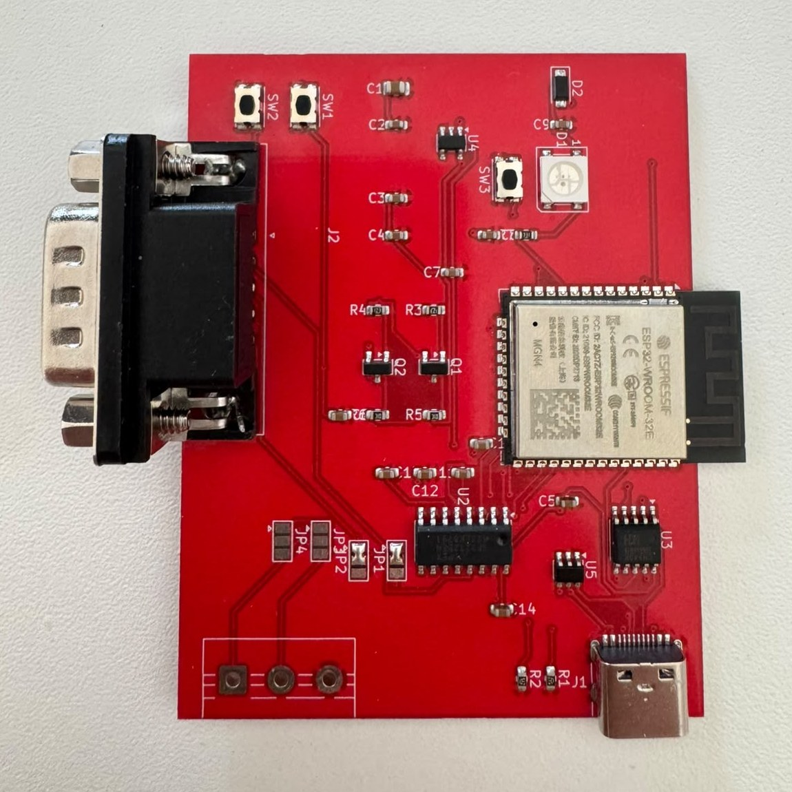
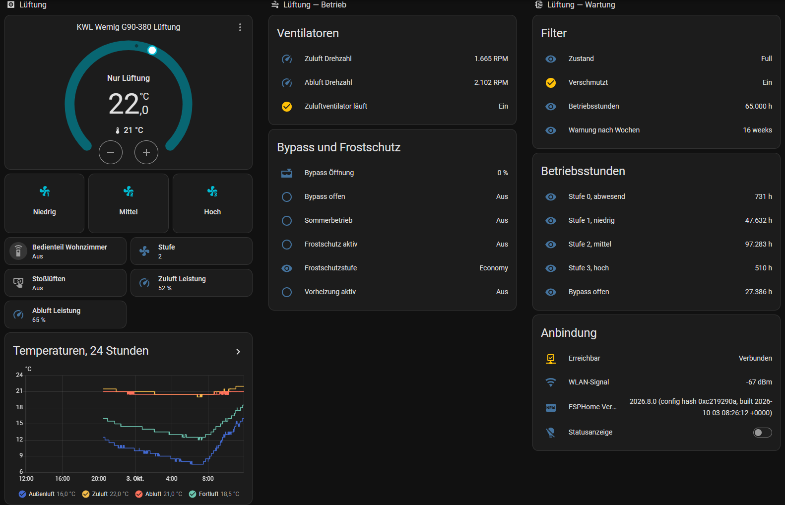

Eine kleine ESP32-Platine für die RS232-Schnittstelle von Zehnder ComfoAir, StorkAir WHR und Wernig G90. Lokal, ohne Cloud, ohne MQTT — mit ESPHome.
A small ESP32 board for the RS232 port of Zehnder ComfoAir, StorkAir WHR and Wernig G90 units. Local, no cloud, no MQTT — powered by ESPHome.

Alles, was das Gerät über die Schnittstelle preisgibt, landet als Entität in Home Assistant — über 40 Stück.
Everything the unit exposes over the serial port becomes an entity in Home Assistant — over 40 of them.
ESPHome-API mit Verschlüsselung. Home Assistant findet die Platine selbst.
Encrypted ESPHome API. Home Assistant discovers the board automatically.
Vier Temperaturen, Stufe, Leistung und Drehzahl, Bypass, Filter, Frostschutz, Betriebsstunden.
Four temperatures, level, fan power and rpm, bypass, filter, frost protection, operating hours.
Stufe 0–3, Komforttemperatur, Stufenwerte. Zeitpläne und Automationen in Home Assistant.
Level 0–3, comfort temperature, fan percentages. Schedules and automations in Home Assistant.
CC-Ease parallel weiter nutzen oder dunkel schalten — ein Schalter in Home Assistant.
Keep the CC-Ease in parallel or switch it dark — one switch in Home Assistant.
Einmal per USB-C flashen, danach nie wieder ein Kabel.
Flash once via USB-C, then never touch a cable again.
Schaltplan, KiCad-Projekt und Fertigungsdaten frei unter CERN-OHL-S.
Schematic, KiCad project and production files under CERN-OHL-S.
So sieht es im Dashboard aus: Stufenknöpfe, Schalter für das Bedienteil, Ventilatoren, Bypass, Filter, Betriebsstunden, Temperaturverlauf.
This is how it looks on a dashboard: level buttons, wall panel switch, fans, bypass, filter, operating hours, temperature history.

| Größe | Size | 70 × 55 mm |
| Prozessor | MCU | ESP32-WROOM-32E |
| Pegelwandler | Level shifter | MAX3232, 2 Kanälechannels |
| Versorgung | Power | 5 V USB-C, < 1 W |
| Anschluss Gerät | Unit port | DB9-Stecker, DTE (Pin 2 RX, 3 TX, 5 GND)DB9 male, DTE (pin 2 RX, 3 TX, 5 GND) |
| Zweiter Kanal | Second channel | Schraubklemme, 3-polig3-pin screw terminal |
| USB | CH340K, Auto-Resetauto reset, USBLC6 | |
| Extras | Extras | Status-LED, Taster, RX/TX-Lötbrückenstatus LED, button, RX/TX solder jumpers |
Die meisten Angaben im Netz sind voneinander abgeschrieben. Hier steht ehrlich, was nachgewiesen ist und was nur gelistet.
Most claims online are copied from each other. This list is honest about what is verified and what is only listed.
| Gerät | Unit | Marke | Brand | Status |
|---|---|---|---|---|
| G90-380 (CS / Luxe) | Wernig | mit dieser Platine nachgewiesenverified with this board | ||
| G90-160 | Wernig | nachgewiesenverified | ||
| ComfoAir 350 | Zehnder | nachgewiesenverified | ||
| ComfoAir 160 | Zehnder | nachgewiesenverified | ||
| ComfoD 450 | Zehnder | nachgewiesenverified | ||
| G90-200 CS | Wernig | wahrscheinlichlikely | ||
| ComfoAir 200 / 500 / 550 | Zehnder | wahrscheinlichlikely | ||
| ComfoD 300 / 350 / 550 | Zehnder | wahrscheinlichlikely | ||
| WHR 920 / 930 / 950 / 960 | J.E. StorkAir | wahrscheinlichlikely | ||
| Santos 370 DC | Paul | wahrscheinlichlikely | ||
| G90-300 | Wernig | ungeprüftunknown | ||
| ComfoAir Q350 / Q450 / Q600, Q350 / Q600 | Zehnder / Wernig | nicht kompatibel (CAN)not compatible (CAN) | ||
| ComfoAir E300 / E350 / E400 | Zehnder | nicht kompatibel (Modbus)not compatible (Modbus) | ||
| Novus 300 | Paul | nicht kompatibel (RS485)not compatible (RS485) | ||
| Vitovent 300-W | Viessmann | nicht kompatibelnot compatible |
Ein „wahrscheinlich“-Gerät getestet? Bitte ein Issue anlegen — es wandert dann zu „nachgewiesen“.
Tested a "likely" unit? Please open an issue — it will move to "verified".
DB9 und Schraubklemme gelötet, Lötbrücken gesetzt, Firmware aufgespielt — anstecken, ins WLAN, fertig.
DB9 and screw terminal soldered, jumpers set, firmware flashed — plug in, join WiFi, done.
Fertige Platinen sind in Vorbereitung. Melde dich unverbindlich — mit Gerätemodell und Land, dann sage ich Bescheid, sobald es losgeht.
Ready-made boards are in preparation. Get in touch — no obligation — with your unit model and country, and I will let you know when they are available.
Interesse anmelden Register interestGerber-, Stücklisten- und Bestückungsdaten für JLCPCB liegen im Repository, Dreh- und Lagekorrekturen schon eingetragen. Selbst zu löten sind nur DB9 und Schraubklemme — und die Lötbrücken JP1/JP2 auf Pad 1–2 schließen.
Gerber, BOM and placement files for JLCPCB are in the repository, with rotation and offset corrections applied. You only solder the DB9 and screw terminal — and close jumpers JP1/JP2 on pads 1–2.
Anleitung GuideGemessen an einer CA350 mit Firmware 3.20: Der oft genannte Modus 1 „nur PC“ wird ignoriert. Modus 3 „PC Master“ schaltet das CC-Ease dunkel; zurück auf Modus 2 ist es wieder aktiv, und Home Assistant kann trotzdem schalten. Ein Schalter in Home Assistant wählt zwischen beidem und stellt die Wahl nach einem Stromausfall selbst wieder her.
Measured on a CA350 with firmware 3.20: the often quoted mode 1 "PC only" is ignored. Mode 3 "PC master" turns the CC-Ease dark; back in mode 2 it is active again and Home Assistant can still switch levels. A switch in Home Assistant picks either and restores the choice after a power cut.